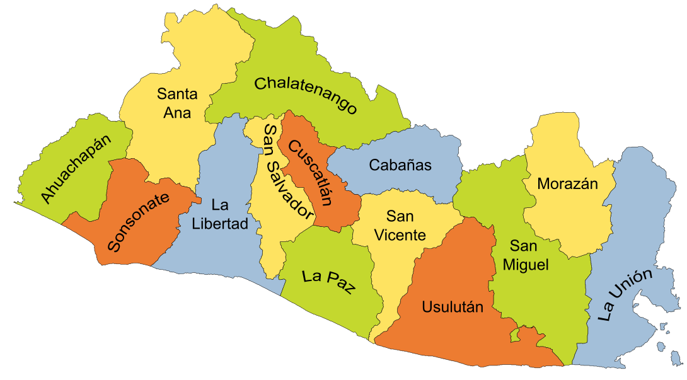
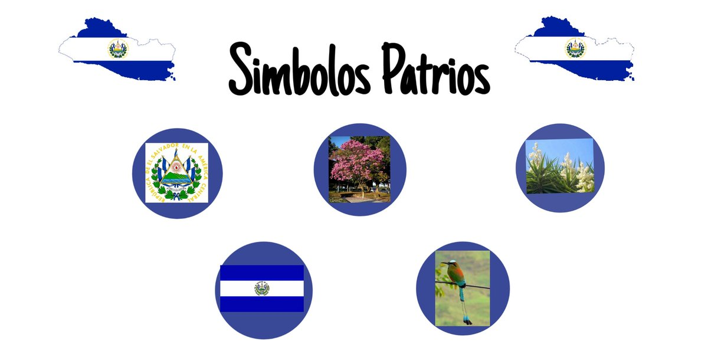
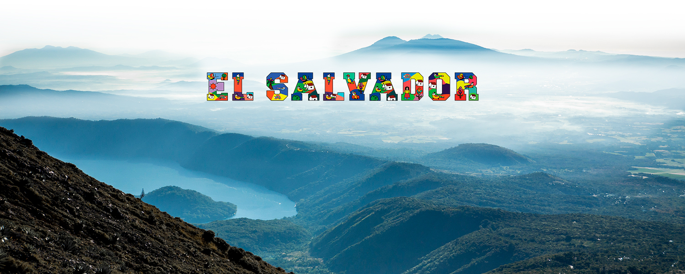

-

¿Cuántos departamentos tiene El Salvador y en que regiones se agrupan?
Los catorce departamentos se agrupan de la siguiente forma:
Zona occidental : Ahuachapán. Santa Ana. Sonsonate.
Zona oriental : Usulután. San Miguel. Morazán. La Unión.
Zona central : La Libertad. Chalatenango. Cuscatlán. San Salvador.
Zona paracentral : La Paz. Cabañas. San Vicente.
Historia de El Salvador
La civilización de El Salvador data de la época precolombina, alrededor de 1500 años A.C., según lo evidencia las ruinas de Tazumal y Chalchuapa. Los primeros habitantes fueron los Pocomames, Lencas, y Pipiles, que se asentaron en las zonas centrales y occidentales del país a mediados del Siglo XI.
El Almirante Español Andrés Niño condujo una expedición a Centro América y desembarcó en la Isla Meanguera, localizada en el Golfo de Fonseca, el 31 de mayo de 1522. Este fue el primer territorio salvadoreño visitado por los españoles.
En junio de 1524 el Capitán Español Pedro de Alvarado empezó una guerra de conquista contra Cuzcatlán (tierra de cosas preciosas) que estaba poblada por las tribus nativas del país. Después de 17 días de sangrientas batallas muchos nativos y españoles murieron, incluyendo al jefe indígena Atlacatl. Pedro de Alvarado derrotado y herido en su cadera izquierda, abandonó la pelea y se retiró a Guatemala, comisionando a su hermano, Gonzalo de Alvarado, a continuar con la conquista de Cuzcatlán. Posteriormente, su primo Diego de Alvarado estableció la villa de San Salvador en abril de 1525, en un sitio llamado La Bermuda, cercano a la ciudad de Suchitoto. En 1546, Carlos I de España le otorgó a San Salvador el título de ciudad.
Durante los años siguientes, el país evolucionó bajo dominio español. Hacia fines del año 1810 surgió un sentimiento de libertad entre los pueblos de Centroamérica y el momento de romper las cadenas de esclavitud llegó en la madrugada del 5 de noviembre de 1811, cuando el Sacerdote José Matías Delgado, replicó las campanas de la Iglesia La Merced en San Salvador, haciendo un llamado a la insurrección. Después de muchas luchas internas, se firmó el Acta de Independencia de Centroamérica en Guatemala, el 15 de septiembre de 1821. Este día conmemoramos el Día de la Independencia de nuestra tierra Cuzcatleca.
Fechas Importantes
El Salvador y Guatemala invitan a Honduras, Nicaragua y Costa Rica a decidir la integración de una Asamblea Constituyente dentro de la proyectada Federación Centroamericana (29 Agosto).
1969
Debido a la expulsión de más de 11 mil salvadoreños residentes en Honduras estalla una guerra no declarada entre ambos países. Fuerzas salvadoreñas invaden el territorio Hondureño. (14 Julio). Una reunión de emergencia de la OEA aprueba el acuerdo de Paz entre El Salvador y Honduras. (30 Julio).
1980
Tres de las organizaciones izquierdistas se unen para coordinar la lucha contra el gobierno. (10 de enero). La Junta anuncia un plan radical de la Reforma Agraria. (6 de marzo). Es nacionalizada la Banca Privada Salvadoreña. (7 de marzo). Es asesinado, mientras oficiaba una misa el Arzobispo de San Salvador Oscar Arnulfo Romero. (24 de marzo). José Napoleón Duarte es nombrado Jefe de Estado (13 de diciembre).
1981
José Napoleón Duarte anuncia la formación de una Asamblea Constituyente en 1982. (5 de marzo). Se forma legalmente un nuevo partido político llamado Alianza Republicana Nacionalista (ARENA). (30 de septiembre)
1982
Se celebran elecciones para la Asamblea Constituyente, se designa como Presidente Provisional al Dr. Alvaro Magaña. (28 de marzo); quien forma su gabinete con representantes de diferentes institutos políticos.
1984
Se realizan elecciones para presidente de la República y es electo José Napoleón Duarte (1o. de julio)
1985
Se realizan elecciones para Alcaldes y Diputados, obteniendo una mayoría relativa el Partido Demócrata Cristiano y descollando como segunda fuerza Política ARENA.
1988
Se realizan de nuevo elecciones para Alcaldes y Diputados y esta vez ARENA obtiene la mayoría de Diputados en la Asamblea Legislativa, además de 178 Alcaldes de los 262 que existen en el país. Junto a ésto obtienen por una gran mayoría la Alcaldía de San Salvador, la cual había estado en manos de la Democracia Cristiana, desde hacía más de 20 años.
1989
El 19 de marzo se realizan elecciones para Presidente y resulta electo por un 54.7% del electorado, el Lic. Alfredo Félix Cristiani, candidato por el Partido ARENA. El 11 de noviembre el FMLN, realiza una ofensiva la cual no logra los fines buscados.
1992
El 16 de enero de 1992 se firman los Acuerdos de Paz en Chapultepec.
Símbolos Patrios
-

Escudo Nacional de El Salvador
Rafael Barraza Rodríguez, calígrafo salvadoreño, creó el escudo nacional. Fue el ganador de 30 participantes más en el concurso promovido por el entonces Ministerio de Guerra y Marina, en 1912. Este símbolo patrio ha sido inspiración para muchos escritores y poetas que, con el correr de los años, han dado diferentes interpretaciones.
El triángulo equilátero -han dicho ellos- es el símbolo de Libertad, Igualdad y Fraternidad. Los dos mares abiertos, el espíritu de un pueblo en constante y solidaria comunión con las demás naciones libres. Los cinco colosos volcanes, surgidos en una fragosa entraña, significan la bravura de la raza, las disgregadas parcelas de la Patria Grande y el principio de nuestra nacionalidad, enfatizado en la leyenda que circunda el dibujo.
El cielo, lleno de luminosa transparencia, representa la gloria, el heroísmo y el sacrificio por la Libertad. El gorro frigio, coronado por la leyenda que consagró nuestra soberanía, es el símbolo de la liberación del yugo extranjero. El iris de paz representa el sendero por el que debe marchar Centroamérica hacia la consecución de su elevado destino. Las cinco banderas, en las que se conservan los colores de la enseña federal, la herencia de nuestros próceres y el sueño de Francisco Morazán.
Los ramos de laurel son la exaltación de la gloria que aspiramos por el camino de la paz, el trabajo y el progreso. Son 14, pues representan a los departamentos que forman la república. Sobre la base que une los ramos, aparece la leyenda «DIOS, UNIÓN, LIBERTAD» que concreta la creencia en un Poder Superior que todo lo gobierna, la unidad y armonía que exige la marcha de la familia salvadoreña hacia un destino mejor y el indomable espíritu libertario del pueblo, que ha preferido la lucha desigual y la muerte, a la subyugación extranjera.
Bandera Actual (1912)
La bandera de El Salvador es un paralelogramo de tela compuesto de tres franjas horizontales: la primera y la tercera azules y la del centro color blanco.
Sus dimensiones oficiales son 3.25 metros de largo por 1.89 de ancho. Cada franja mide 0.63 de ancho. Puede dársele cualquier dimensión siempre que conserve las mismas dimensiones y colores.
Las dos franjas azules simbolizan los dos océanos que bañan a Centroamérica: el Océano Pacifico y el Atlántico, el color blanco simboliza la paz.
Lleva en medio de la franja blanca el Escudo Nacional o la leyenda «Dios, Unión, Libertad». El Escudo es llevado si la organización que coloca la bandera es gubernamental (Casa Presidencial, embajadas, delegaciones del gobierno, etc.) y todo lo que concierne el ejercito (cuarteles, aviones, buques, etc.). Mientras que la leyenda «Dios, Unión, Libertad» en letras doradas, se utiliza si es colocada por cualquier individuo u organización que no sea del gobierno, como las escuelas, edificios públicos, barcos mercantes, etc.
Árbol Nacional (Maquilishuat)
El maquilishuat es el árbol nacional de El Salvador, originario de la América tropical, extendiéndose desde el sur de México, a través de América Central y las Antillas hasta Venezuela, Colombia y Ecuador. El maquilishuat puede crecer bien en suelos pobres, ácidos y calizos o lodosos.Flor Nacional (Flor de Izote)
La flor de Izote prácticamente define la identidad de El Salvador, pues representa el alimento más consumido por los pobladores originarios; posee gran valor en el país, tanto así que el poeta Oswaldo Escobar la describió como blancos y delicados brotes que se asemejan a verdes puñales que surgen de la planta.
Ave Nacional (Torogoz)
El Torogoz fue declarado oficialmente como “Ave Nacional de El Salvador”, en octubre de 1999. El Ave Nacional simboliza los esfuerzos por difundir una cultura protectora de nuestro medio ambiente y fomentar el respeto por las distintas formas de vida silvestre que subsisten en El Salvador.
Oración a la Bandera
Dios te salve, Patria Sagrada,
en tu seno hemos nacido y amado.
Eres el aire que respiramos,
la tierra que nos sustenta,
la familia que amamos,
la libertad que nos defiende,
la religión que nos consuela.
Tú tienes nuestros hogares queridos,
fértiles campiñas, ríos majestuosos,
soberbios volcanes,
apacibles lagos, cielos de púrpura y oro.
En tus campos ondulan doradas espigas,
en tus talleres vibran los motores,
chisporrotean los yunques,
surgen las bellezas del arte.
Patria, en tu lengua armoniosa
pedimos a la providencia que te ampare,
que abra nuestra alma al resplandor del cielo,
grabe en ella, dulce afecto al maestro y la escuela;
y nos infunda tu santo amor.
Patria, tu historia, blasón de héroes y mártires,
reseña virtudes y anhelos;
tú reverencias el Acta que consagró la
soberanía nacional y marcas las senda florida
en que la Justicia y la Libertad nos llevan hacia
Dios.
¡Bandera de la Patria,
símbolo sagrado de El Salvador,
te saludan reverentes las nuevas generaciones!
Para ti, el solvivificante de nuestras glorias,
los himnos del patriotismo,
los laureles de los héroes.
Para ti, el respeto de los pueblos
y la corona de amor
que hoy ceñimos a tu inmortales sienes.
Himno Nacional de El Salvador
LETRA
CORO
Saludemos la patria orgullosos
de hijos suyos podernos llamar;
y juremos la vida animosos,
sin descanso a su bien consagrar.
PRIMERA ESTROFA
De la paz en la dicha suprema,
siempre noble soñó El Salvador.
Fue obtenerla su eterno problema,
conservarla es su gloria mayor.
Y con fe inquebrantable el camino
del progreso se afana en seguir,
por llenar su grandioso destino,
conquistarse un feliz porvenir.
Le protege una férrea barrera
contra el choque de ruin deslealtad,
desde el día que en su alta bandera
con su sangre escribió: LIBERTAD!!
SEGUNDA ESTROFA
Libertad es su dogma, es su guía
que mil veces logró defender;
y otras tantas, de audaz tiranía
rechazar el odioso poder.
Dolorosa y sangrienta es su historia,
pero excelsa y brillante a la vez;
manantial de legítima gloria,
gran lección de espartana altivez.
No desmaya en su innata bravura,
en cada hombre hay un héroe inmortal
que sabrá mantenerse a la altura
de su antiguo valor proverbial.
TERCERA ESTROFA
Todos son abnegados y fieles
al prestigio del bélico ardor
con que siempre segaron laureles
de la patria salvando el honor.
Respetar los derechos extraños
y apoyarse en la recta razón
es para ella, sin torpes amaños
su invariable, más firme ambición.
Y en seguir esta línea se aferra
dedicando su esfuerzo tenaz,
en hacer cruda guerra a la guerra;
su ventura se encuentra en la paz.
¿Quieres visitar El Salvador? Te dejamos una guía de turismo en la que puedes consultar la amplia gama de lugares que puedes conocer.
Has clic aquí.
-
